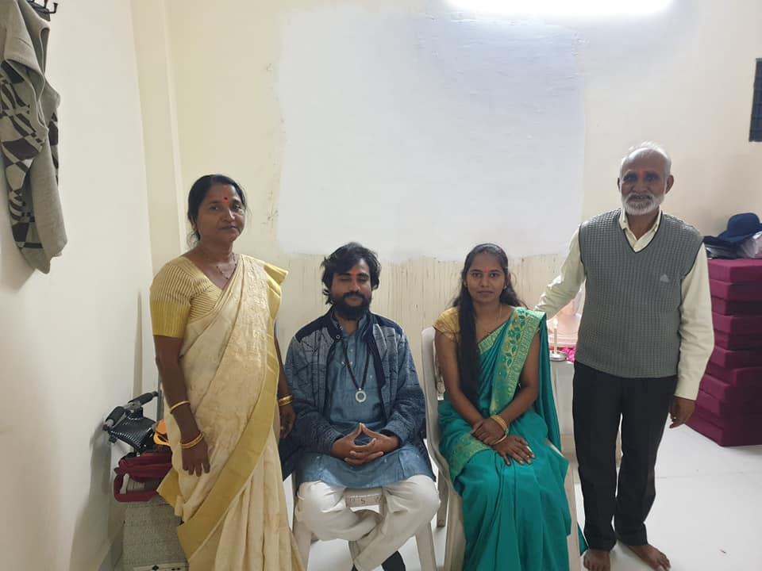
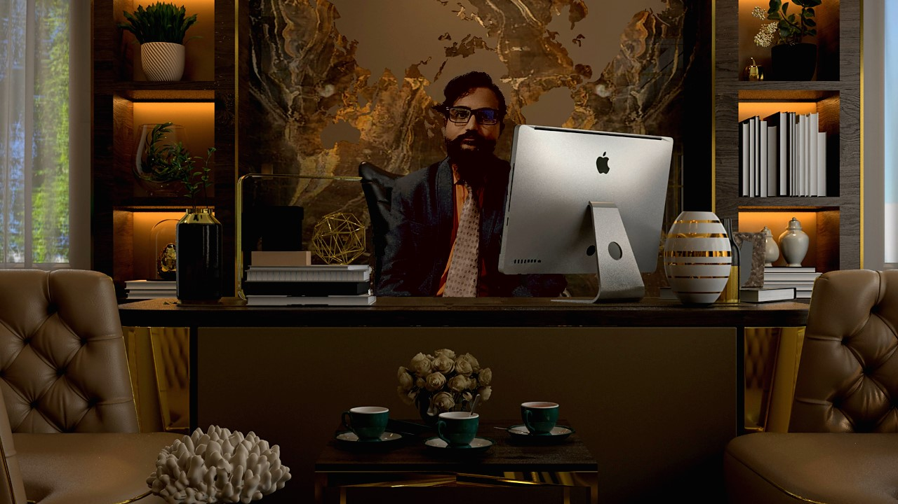

Let's go back to the human being,
AS WE HAVE LOST IT, THERE IS A WAY.
We evolved into war and warriors;
LET'S FIND THE HUMAN WAY.
BACK TO BEING HUMAN.
That's what we're meant to be.
It's true that we are complex
BUT WE CAN LIVE IN HARMONY.
Back to the human being.
What does this mean for you?
Is it wrapped up in your words or your thoughts
AND ALL THE THINGS YOU DO?
Back to being human.
I REALLY think we should
LIKE WHAT IT MEANS TO BE HUMAN
flows in Your BLOOD.
Do not judge
me if you don't know me.
Never underestimate me if you don't challenge me.
And don't speak
about me until
you spoke
to me.
© 2022 -Created by KOYAL SANGHARSH MESHRAM😇